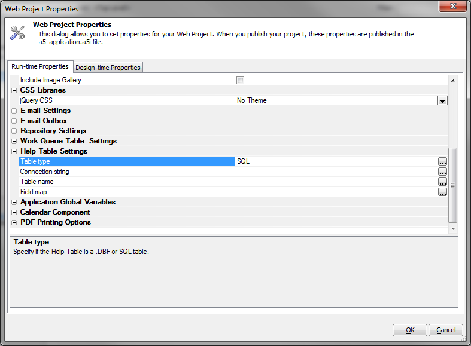
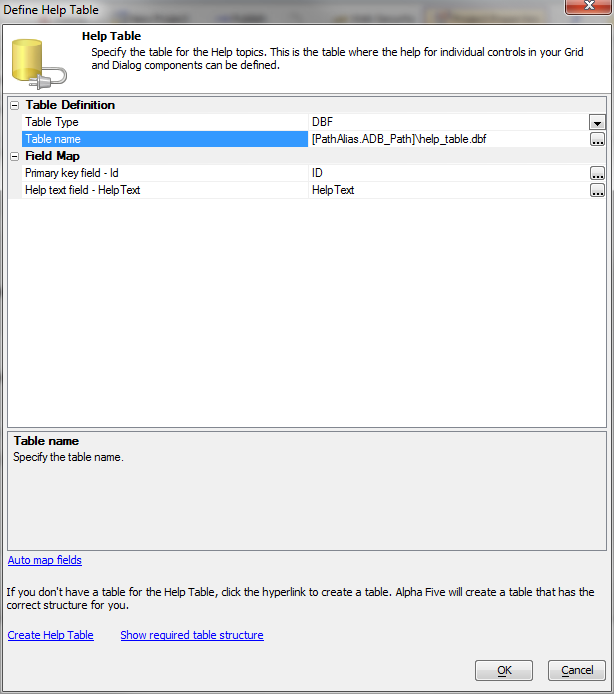
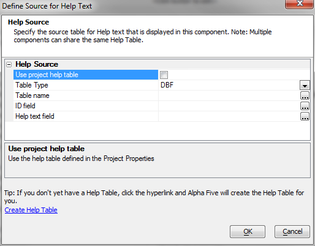

Help Topics for Controls - Project Help Table
Previously you had to define the table for your custom help topics in each component that you created. Now, you can define a global project-level HelpTopics table in your Project Properties.

In your components, you can check Use project help table to use the global project-level HelpTopics table, or uncheck this box to define a different help table.
